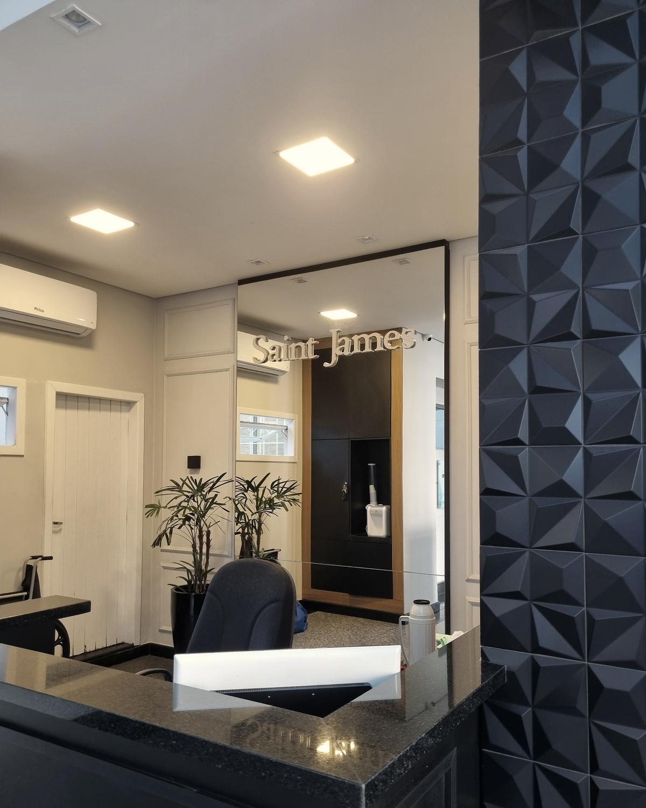

Psicoterapia psicanalítica · Florianópolis e online
Para entender o que se repete na sua vida, e por quê.
Atendo adultos no Centro de Florianópolis e por videochamada. Um espaço para falar com franqueza e pensar a sua história sem pressa.
Psicóloga Karen Anne de Medeiros Pinto · CRP 12/02803
Adultos · Centro de Florianópolis · Online
Às vezes a vida parece girar em círculos.
Os mesmos desencontros, com pessoas diferentes. A mesma angústia que volta quando tudo parecia resolvido.
Por que você se afasta? E o que acontece quando alguém se aproxima? Perguntas assim nem sempre têm resposta rápida, mas costumam ter uma história.
Há também o cansaço de ser “demais” para uns e nunca o bastante para si. Ou a sensação de que um sintoma resolvido abre espaço para outro.
A terapia é o lugar para olhar para isso com calma e com honestidade, no seu tempo.
Todo mundo hoje tem um transtorno. E a sua história?
A abordagem
Psicoterapia psicanalítica
Na psicoterapia psicanalítica, você fala livremente sobre o que vive, sente e lembra. Não há roteiro nem perguntas certas.
Aos poucos, aparecem as repetições: escolhas, medos e reações que voltam de formas diferentes. Escutar isso com atenção ajuda a entender de onde vem o que hoje pesa.
O trabalho não é dar conselhos prontos. É abrir espaço para que você enxergue as próprias perguntas e encontre respostas que façam sentido para a sua vida.
Falar livremente, escutar o que se repete.
Temas
O que costuma trazer alguém
Alguns assuntos que chegam com frequência ao consultório. Se o seu não está aqui, ele também cabe.
- Separações e fim de relações
- Dependência emocional
- Mudanças e recomeços
- A relação com o corpo e a imagem
- Vínculos intensos e instáveis
- Ansiedade e angústia

Como funciona
Presencial no Centro ou online
No consultório. As sessões presenciais acontecem no Centro Comercial Saint James, na Rua Presidente Coutinho, 311, sala 906, no Centro de Florianópolis.
Por videochamada. Para quem mora em outra cidade, viaja muito ou prefere a própria casa, o atendimento online segue o mesmo cuidado.
Dia e horário são combinados pelo WhatsApp, de acordo com a sua rotina.
Formas de atendimento
Um trabalho no seu ritmo
Sessões individuais, presenciais ou online, com a frequência combinada entre nós.
Psicoterapia individual
Para adultos que querem entender a própria história, lidar com o que se repete e decidir com mais clareza.
Começar a terapiaAtendimento online
Por videochamada, de onde você estiver. A sessão tem a mesma escuta e o mesmo sigilo do consultório.
Agendar onlinePresencial no Centro
No Centro Comercial Saint James, na Rua Presidente Coutinho, 311, sala 906, Centro de Florianópolis.
Para quem é
Um bom encontro
A terapia funciona melhor quando há afinidade. Estas pistas ajudam a perceber se este é o seu caso.
Pode ser para você se…
- Quer entender a sua história, não só aliviar um sintoma.
- Gosta de franqueza e prefere conversas sem rodeios.
- Quer falar com liberdade, no seu ritmo.
- Prefere o presencial no Centro ou o online, de onde estiver.
Talvez não seja se…
- Procura conselhos prontos ou alguém que diga o que fazer.
- Espera uma solução rápida em poucas sessões.
- Está em crise e precisa de ajuda agora: ligue 188 (CVV) ou procure o pronto-socorro mais próximo.
Sobre
Sobre a Karen
Sou psicóloga e trabalho com psicoterapia psicanalítica, em consultório no Centro de Florianópolis e online.
Gosto de conversas francas. Na clínica, isso quer dizer escutar com atenção, perguntar o que precisa ser perguntado e respeitar o tempo que cada pessoa leva para se entender.
Fora do consultório, escrevo e gravo sobre saúde mental e cultura: séries, música, futebol e as perguntas que eles despertam, lidas pela psicanálise.
Psicóloga Karen Anne de Medeiros Pinto · CRP 12/02803
Acompanhar no InstagramComo começar
Três passos simples
Mande uma mensagem. Pelo WhatsApp, conte em poucas palavras o que você procura e se prefere presencial ou online.
Primeira conversa. No primeiro encontro, você fala do que está vivendo e nós combinamos como seguir.
Seguimos juntos. A frequência das sessões é combinada entre nós, de acordo com o que faz sentido para você.
Se quiser, converse pelo WhatsApp antes de agendar para tirar alguma dúvida.
Tirar uma dúvidaDúvidas
Perguntas frequentes
Você atende online?
Sim. As sessões online são por videochamada, para quem está em outra cidade ou prefere ser atendido em casa. Também atendo presencialmente no Centro de Florianópolis.
Onde fica o consultório?
No Centro Comercial Saint James: Rua Presidente Coutinho, 311, Bloco B, sala 906, Centro, Florianópolis/SC, 88015-230.
Como marco a primeira sessão?
Pelo WhatsApp (48) 99963-3505. Por lá combinamos o dia, o horário e a modalidade.
O que é psicoterapia psicanalítica?
É uma forma de terapia em que você fala livremente e, juntos, olhamos para o que se repete na sua história. O foco é compreender a origem do que incomoda, e não só o sintoma.
Preciso saber o que falar na sessão?
Não. Você pode começar pelo que estiver mais presente no dia. Não há tema certo nem ordem a seguir.
O que eu conto fica entre nós?
Sim. O sigilo é um dever da psicóloga, previsto no Código de Ética Profissional do Psicólogo.
Dá para começar com uma mensagem.
Conte o que você procura, se prefere presencial ou online e o melhor horário para você.
Agendar pelo WhatsApp